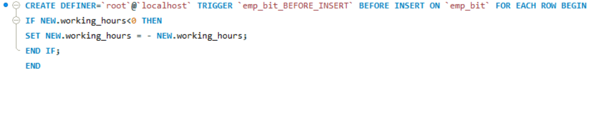

Featured Projects

Customer Order Management
Database design using PK, FK, constraints, triggers and relationships.
Created tables using primary keys,
foreign keys, triggers and data validation.

Sales Reporting View
Business reporting using SQL views and aggregations.
Displayed Employee hierarchy using self join.

Error Handling
Error Handling - User defined exceptions using Diagnostics and SQLstate
Created a stored procedure to capture errors involving parameter binding,null and duplicate data.

Stored Procedures
Reusable and parameterized database logic.
div class="project-details"> Obtained data about customer orders based on country and payments.